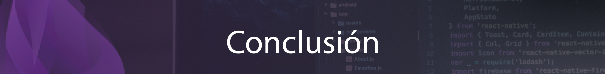

Elixir es un lenguaje de programación potente y flexible que tiene un brillante futuro por delante. Su capacidad para gestionar la concurrencia y los sistemas distribuidos lo convierten en la opción ideal para crear aplicaciones escalables y de alto rendimiento. Además, la creciente comunidad de bibliotecas y frameworks de Elixir hace que sea más fácil que nunca iniciarse en este lenguaje.
Tanto si eres un desarrollador experimentado como si acabas de empezar, Elixir es sin duda un lenguaje a tener en cuenta. Con sus características únicas y su creciente popularidad, es seguro que será una parte importante del panorama de la programación en los próximos años.